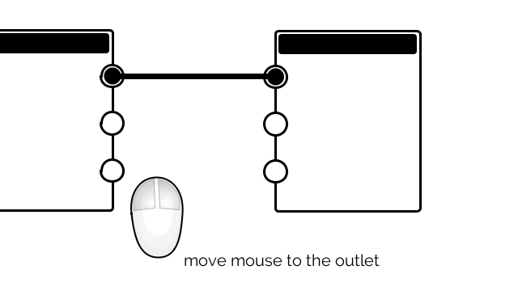
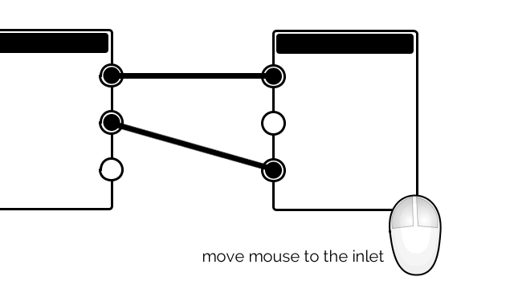
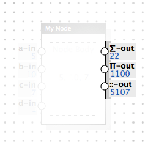
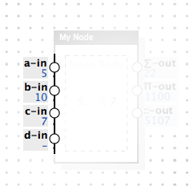

( GitHub | Examples | API | Issues | Terminology )
What is RPD?
RPD is the abbreviation for Reactive Patch Development...
...or, actually, whatever you decide. It is the library which brings node-based user interfaces to the modern web, in full their power (when you know how to use it) and in a very elegant and minimalistic way. Node-based is something like the thing you'll (probably) see above if you move your mouse cursor, or any other pointing device, above the RPD logo — (almost) nothing to do with node.js. Some people also say that with such user interfaces they do Flow Programming. If you are wondering yet, what that means, Node-based interface is the one where man may visually connect different low-level components using their inputs and outputs and observe the result in real time, take PureData, QuartzComposer, VVVV, NodeBox, Reaktor etc. for example.
RPD brings DataFlow Programming to the Web both in the elegant and minimal ways.
Elegancy is achieved both with providing you a very simple API for building these powerful things, and (thanks to the reactive streams, powered by Kefir.js library) pure functional approach in the core, so it's easy for you to operate with sequences of data over time in any way you want, and also every action performed, (such as adding a node, or connecting something, or sending a value) is atomic, so it can easily be rolled back or stored in, and so restored from, some file.
Minimalism is another goal of this library, which implies the RPD library size is kept as minimal as possible, so your customer may load the interface you created using 3G internet or wi-fi limited to some very low speed. Don't ask me why may it happen, it still happens everywhere. Minimalism is here not in paranoid amounts, though—if feature requires a bit more code, or some task gets very complex with less code, we for sure will add some more code for the sake of simplicity.
The default configuration with SVG renderer and Quartz style included takes 11KB when compiled, minimized and gzipped! (30KB not gzipped). Though you also need latest Kefir.js, the only required dependency to make it work, which adds just ~10KB more, since Kefir.js author also likes minimalism in his code.
If you feel that's you know everything in this field and this library is definitely what you need (and no doubts, it is!), you may either download the version with default configuration or go straight to Building Section to discover how easy it is to grab a code and configure yourself a custom one. If you still feel unsafe, stay with me for a bit.
Features
- HTML (yes, pure HTML&CSS!) and SVG renderers out-of-the-box;
- 7 Rendering Styles out-of-the-box;
- Dozens of Nodes in 4 Toolkits, serving as examples of what you can do with the help of RPD;
- Your user may add Nodes from the list, connect Nodes, remove Nodes, go into sub-Patches, ...;
- Import/Export of Networks from/to JSON or Plain Text out-of-the-box;
- Very powerful, and both super-simple and minimal, API allowing you to create your custom Node Toolkits;
- Everything is configurable and optional at the same time, how you render the Node, the way it looks, the way it processes data, the way input and output channels behave;
- Powered by Kefir library, so allows you to include Reactive Streams of any complexity into the flow of your Network;
- tons of features more...
Code Examples
All the examples below are interactive—you are free to connect Nodes and manipulate the Patch Flow.
To connect Outlet of one Node to Inlet of another, use the click the Outlet → move your mouse → click the Inlet method.

To disconnect, click the Inlet → move your mouse → click anywhere.
To reconnect to another Inlet: click currently connected Inlet → move your mouse → click wanted Inlet.

Examples with source code:
Random Generator
Random Generator with the help of util toolkit. Following a signal of Metronome, which "bangs" every 3 seconds by default, Random Generator yields a new value between specified minimum and maximum (here: a number from 0 to 26, just for the sake of the example). The result then goes to a multiply-by-two Node, which is produced from a new type defined in the code. Then we Log last five generated random values and last five multiplied value, just to keep track on things.
Rpd.renderNext('svg', document.getElementById('example-one'),
{ style: 'compact-v' });
var patch = Rpd.addPatch('Generate Random Numbers').resizeCanvas(800, 110);
// add Metro Node, it may generate `bang` signal with the requested time interval
var metroNode = patch.addNode('util/metro', 'Metro').move(40, 10);
// add Random Generator Node that will generate random numbers on every `bang` signal
var randomGenNode = patch.addNode('util/random', 'Random').move(130, 20);
randomGenNode.inlets['max'].receive(26); // set maximum value of the generated numbers
// add Log Node, which will log last results of the Random Generator Node
var logRandomNode = patch.addNode('util/log', 'Log').move(210, 60);
randomGenNode.outlets['out'].connect(logRandomNode.inlets['what']);
// define the type of the node which multiplies the incoming value by two
var multiplyTwoNode = patch.addNode('core/basic', '* 2', {
process: function(inlets) {
return {
'result': (inlets.multiplier || 0) * 2
}
}
}).move(240, 10);
var multiplierInlet = multiplyTwoNode.addInlet('util/number', 'multiplier');
var resultOutlet = multiplyTwoNode.addOutlet('util/number', 'result');
// connect Random Generator output to the multiplying node
var logMultiplyNode = patch.addNode('util/log', 'Log').move(370, 20);
resultOutlet.connect(logMultiplyNode.inlets['what']);
// connect Random Generator output to the multiplying node
randomGenNode.outlets['out'].connect(multiplierInlet);
// finally connect Metro node to Random Generator, so the sequence starts
metroNode.outlets['out'].connect(randomGenNode.inlets['bang']);
Flag Generator
Tries to generate Country Flag from Unicode codepoints, inspired by article "Emoji flags from ISO 3166-1 country codes". (There's also "Emoji Flag Redux" article, written earlier). When you see blank squares (tofu) in "Maybe Flag" Node, there's no flag for this combination of letters.
Both Metronomes tick with different period—top one waits two seconds to pass between ticks, bottom one waits three. Ticks trigger corresponding Random Generators to generate a new value between 0 and 26 (so, 0 <= value < 26), which is used as an index of a letter in the alphabet to yield from Letter nodes. Then, two letters are sent to Maybe<Flag> Node where they are combined, and if they form a proper two-letter ISO code of the country, you see the flag. If not, you see two tofu squares or a squares with letters inside. Or, if your system is not supporting Emoji, you see something else and then for you this one is not the kind of representative example.
Rpd.renderNext('svg', document.getElementById('example-two'),
{ style: 'compact-v' });
var patch = Rpd.addPatch('Flag Generator').resizeCanvas(800, 200);
var metro1 = patch.addNode('util/metro').move(50, 30);
var metro2 = patch.addNode('util/metro').move(50, 90);
metro1.inlets['period'].receive(2000);
metro2.inlets['period'].receive(3000);
var random1 = patch.addNode('util/random').move(170, 10);
random1.inlets['max'].receive(26);
var random2 = patch.addNode('util/random').move(170, 120);
random2.inlets['max'].receive(26);
var letter1 = patch.addNode('util/letter').move(300, 10);
var letter2 = patch.addNode('util/letter').move(300, 110);
metro1.outlets['bang'].connect(random1.inlets['bang']);
metro2.outlets['bang'].connect(random2.inlets['bang']);
random1.outlets['random'].connect(letter1.inlets['code']);
random2.outlets['random'].connect(letter2.inlets['code']);
Rpd.nodetype('user/maybe-flag', {
title: 'May be a flag?',
inlets: {
'letterA': { type: 'core/any' },
'letterB': { type: 'core/any' }
},
outlets: {
'char': { type: 'core/any' },
'code': { type: 'core/any' }
},
process: function(inlets) {
if (!inlets.letterA || !inlets.letterB) return;
return { 'code': String.fromCharCode(inlets.letterA.charCodeAt(0) - 32)
+ String.fromCharCode(inlets.letterB.charCodeAt(0) - 32),
'char' : fromCodePoint(55356)
+ fromCodePoint(inlets.letterA.charCodeAt(0) - 97 + 56806)
+ fromCodePoint(55356)
+ fromCodePoint(inlets.letterB.charCodeAt(0) - 97 + 56806) };
}
});
// d3_tiny is a 100-lined JavaScript included in RPD distribution
// which supports basic d3.js functions like `.select`, `.attr` & s.o.,
// fully compatible with "big" d3.js
var d3 = d3 || d3_tiny;
Rpd.noderenderer('user/maybe-flag', 'svg', function() {
var textElm;
return {
first: function(bodyElm) {
textElm = d3.select(bodyElm).append('text')
.style('text-anchor', 'middle');
},
always: function(bodyElm, inlets, outlets) {
if (!outlets) return;
textElm.text(outlets.char + ' (' + outlets.code + ')');
}
}
});
var maybeFlag = patch.addNode('user/maybe-flag', 'Maybe<Flag>').move(430, 70);
letter1.outlets['letter'].connect(maybeFlag.inlets['letterA']);
letter2.outlets['letter'].connect(maybeFlag.inlets['letterB']);
var logNode = patch.addNode('util/log', {}, {
'svg': {
size: { width: 210, height: 30 }
}
}).move(550, 70);
maybeFlag.outlets['char'].connect(logNode.inlets['what']);
HTML5 Canvas and Custom Toolkit
The Scene consists of seven (by default) shifted and colored squares is loaded and attached to HTML5 Canvas. It has a configuration object where values could be changed by user. Since it uses requestAnimationFrame for animation, on every frame it checks this configuration and redraws itself according to values specified there. So when values in this object are changed, Scene is immediately updated.
The Networks of given Nodes allows you to change configuration values. For example, by tuning the top left Knob, you may change the value of Red component of the starting color. By tuning the one in the middle, you may change the Y-coordinate of the shift between every two squares. You may take one of the free unconnected Knobs and connect it to Count Inlet of the Scene node to control the number of squares.
But if you connect the result Outlet of the Node named % to one or several of the color Node Inlets, you may interact with the Scene in even more direct way. mouse Node collects all of the movements of your mouse and converts them to the pair of X and Y coordinates. Then the mentioned % Node divides the value of X coordinate by modulus of 256, so the result is always between 0 and 256 (so, 0 <= result < 256) and always matches the amount color node wants as the input.
/* ============== Coordinates Channel Type ============== */
Rpd.channeltype('my/coords', {
show: function(val) {
// nicely show a received pair of coordinates, floored to an integer
return '<' + Math.floor(val.x) + ':' + Math.floor(val.y) + '>';
}
});
/* ============== Coordinates Node Type ============== */
Rpd.nodetype('my/coords', {
inlets: {
x: { type: 'util/number', default: 0 },
y: { type: 'util/number', default: 0 }
},
outlets: {
out: { type: 'my/coords' }
},
// joins received `x` and `y` into one object
process: function(inlets) {
return { out: { x: inlets.x, y: inlets.y } };
}
});
//* ============== Angle (radians) Channel Type ============== */
Rpd.channeltype('my/angle', {
allow: [ 'util/number '], // outlets of `util/number` type are allowed to be
// connected to inlets of `my/angle` type
accept: function(v) { return (v >= 0) && (v <= 360); },
show: function(v) { return v + '˚'; }
});
/* ============== Canvas-driven Scene Node Type ============== */
var defaultConfig = {
count: 7,
from: { r: 0, g: 0, b: 0 },
to: { r: 255, g: 0, b: 0 },
shift: { x: 25, y: 0 },
rotate: 15
};
Rpd.nodetype('my/scene', {
inlets: {
from: { type: 'util/color', 'default': defaultConfig.from },
to: { type: 'util/color', 'default': defaultConfig.to },
count: { type: 'util/number', 'default': defaultConfig.count,
adapt: function(v) { return Math.floor(v); } },
shift: { type: 'my/coords', 'default': defaultConfig.shift },
rotate: { type: 'my/angle', 'default': defaultConfig.rotate },
},
process: function() {}
});
/* ============== Renderer for Canvas-driven Scene ============== */
var SVG_XMLNS = 'http://www.w3.org/2000/svg';
function lerp(v1, v2, pos) {
return (v1 + ((v2 - v1) * pos));
}
Rpd.noderenderer('my/scene', 'svg', function() {
var width = 100, height = 100;
var context;
var particles = [];
var lastCount = 0;
var config = defaultConfig;
// function to render current state of the scene using requestAnimationFrame
function draw() {
if (context) {
context.save();
context.fillStyle = '#fff';
context.fillRect(0, 0, width, height);
context.fillStyle = '#000';
particles.forEach(function(particle, i) {
context.fillStyle = 'rgb(' +
Math.floor(lerp(config.from.r, config.to.r,
1 / (particles.length - 1) * i)) + ',' +
Math.floor(lerp(config.from.g, config.to.g,
1 / (particles.length - 1) * i)) + ',' +
Math.floor(lerp(config.from.b, config.to.b,
1 / (particles.length - 1) * i)) + ')';
context.fillRect(0, 0, 15, 15);
context.translate(config.shift.x, config.shift.y);
context.rotate(config.rotate * Math.PI / 180);
});
context.restore();
}
requestAnimationFrame(draw);
}
requestAnimationFrame(draw);
// return actual renderer definition
return {
size: { width: width + 10, height: height + 10 },
pivot: { x: 0, y: 0 },
// on creation, add canvas to the node body
first: function(bodyElm) {
var group = document.createElementNS(SVG_XMLNS, 'g');
group.setAttributeNS(null, 'transform', 'translate(5, 5)');
var foreign = document.createElementNS(SVG_XMLNS, 'foreignObject');
canvas = document.createElement('canvas');
canvas.setAttributeNS(null, 'width', width + 'px');
canvas.setAttributeNS(null, 'height', height + 'px');
canvas.style.position = 'fixed';
foreign.appendChild(canvas);
group.appendChild(foreign);
bodyElm.appendChild(group);
context = canvas.getContext('2d');
},
// update config values using values from inlets
always: function(bodyElm, inlets) {
if (!isNaN(inlets.count) && (inlets.count != lastCount)) {
particles = [];
for (var i = 0; i < inlets.count; i++) {
particles.push({});
}
lastCount = inlets.count;
}
if (inlets.from) config.from = inlets.from;
if (inlets.to) config.to = inlets.to;
if (inlets.shift) config.shift = inlets.shift;
if (!isNaN(inlets.rotate)) config.rotate = inlets.rotate;
}
};
});
/* ============== Patch Structure ============== */
Rpd.renderNext('svg', document.getElementById('example-three'),
{ style: 'compact-v' });
var patch = Rpd.addPatch('Generate Canvas Shapes').resizeCanvas(800, 205);
var scene = patch.addNode('my/scene').move(570, 5);
var color1 = patch.addNode('util/color').move(120, 5);
var color2 = patch.addNode('util/color').move(100, 80);
var coords = patch.addNode('my/coords').move(305, 90);
var knob1 = patch.addNode('util/knob').move(25, 5);
var knob2 = patch.addNode('util/knob').move(490, 110);
var knob3 = patch.addNode('util/knob').move(210, 105);
var knob4 = patch.addNode('util/knob').move(400, 110);
var mouse = patch.addNode('util/mouse-pos').move(0, 70);
var modulus = patch.addNode('util/mod').move(20, 150);
var comment = patch.addNode('util/comment').move(80, 100);
knob1.inlets['max'].receive(256);
knob2.inlets['max'].receive(180);
knob4.inlets['max'].receive(15);
coords.inlets['x'].receive(25);
modulus.inlets['b'].receive(256);
comment.inlets['text'].receive('Try to connect "%" node output' +
+ ' to inlet of "my/coords" node or one of the "color" nodes');
knob1.outlets['number'].connect(color1.inlets['r']);
knob3.outlets['number'].connect(coords.inlets['y']);
color1.outlets['color'].connect(scene.inlets['from']);
color2.outlets['color'].connect(scene.inlets['to']);
coords.outlets['out'].connect(scene.inlets['shift']);
mouse.outlets['x'].connect(modulus.inlets['a']);
Terminology
At first, we'll define terms of node-based interfaces, the way RPD sees them, starting from the highest level (the Network) and going down till the lowest known level (the Link). If that's not very comfortable for you, you may do it in reverse direction, then please scroll down to Link and then reach the top at Network.
Network

Network defines a system of Patches. At this level Patch may be considered as a complex procedure with several inputs and outputs and a Network is a program that uses these procedures.
Say, you define some complex functionality of a 3D vertex shader with a Patch. It has its inputs such as 3D position, color and texture coordinate of a vertex and outputs as 2D coordinate and modified color. Then you may create another “root” Patch, which allows user to apply combinations of different vertex shaders to an imported object and so re-use the Shader Patch several times in different configurations. These two Patches (first one used several times and second one used once) form a simple Network.
So, some Node in one Patch may represent the inputs and outputs of another Patch's copy, running in the same Network.
Patch

Patch stores a collection of Node instances and connections between them. The resulting structure of Nodes and connections defines the way data flows in this Patch.
Node

Nodes are building blocks which use connections to receive any data from one nodes, modify it, and send transformed data to another Nodes. Nodes may have zero or more inputs of different types, named Inlets and zero or more outputs of different types, named Outlets. Nodes may have a body which may represent received data or even have some controls allowing user to change it though hidden inlets.
Outlet

Outlet is a socket of a Node designed to send outgoing data. Outlet may be connected to an Inlet of another Node or to several Inlets of other Nodes.
Type of the Outlet determines which types of values it sends.
Outlet and Inlet types are called Channel Types.
Inlet

Inlet is a socket of a Node designed to receive incoming data. Depending on configuration, it may accept only one connection from an Outlet or any number of connections from several Outlets.
Inlet may have a default value, so it sends it to the Node when the latter is added to a Patch.
Inlet may be hidden, so it won't be visible for user, but may receive data from inputs located in the body of the Node.
Inlet may be “cold”, in contrary to “hot” by default, so it won't trigger the modifying process, but save the last value that came to this Inlet.
Inlets may accept or deny values depending on their type. Type may specify a function which will transform data before it will be sent to the Node.
Link

Link is what connects single Outlet to single Inlet. Always one to one. It may be disabled, so it will not deliver all the data which comes inside, but keep the connection.
Toolkit
Toolkit is a group of Node and Channel Types lying in (preferrably, but not required) one namespace. For example, Processing.js Toolkit may define Nodes and Channels which control the configuration of a Processing Sketch, use and convert data types specific to Processing and so on.
Rendering Flow

This sub-section is actually not about a specific Term and intended to quickly clarify how the things described below work together.
When you need to render a Patch, you need to know three things: which Renderer you want to use, which Style you prefer visually and the Target where you want everything to be injected. Style is optional, though, since quartz is the default one to be used, but sad things happen, and you may dislike it. So, to satisfy every taste, several Styles are included in RPD distribution. You actually may use same configuration to render several Patches, but let's leave it to API docs for now.
The engine of the rendering process is Actions. They are fired on every change of the value, when new Connection between Outlet and Inlet is established, or instead someone removed the Connection, or someone moved one Node etc. To the Rendering System there is no matter who did this Action, User or API call.
If you know what Flux or Elm is, it is almost the same Action concept you've met there; if you don't know about both, just replace Action term with Event term here and below.
So, for example you chose 'svg' Renderer to render your Patch. What happens then? On every user or logical Action, this Renderer is notified. Then this Renderer decides which (preferably, the tiniest one) part of the Network it should re-render. If Node or Channel (Inlet or Outlet) is required to be updated, it searches for the corresponding Node Renderer or Channel Renderer, the one assigned to this Renderer. Node/Channel Renderer can render particular type of the Node/Channel (and then it's called Node/Channel Type Renderer) or it may be overridden for the specific instance of the Node/Channel (and then it's called Node/Channel Instance Renderer). If something else was updated, Renderer re-renders this part itself, without delegation. No, actually, it sometimes passes some updates to Style, just Node/Channel Renderer step is skipped in this case.
In its turn, Node/Channel Renderer renders the body of the Node ('svg' Renderer uses SVG elements for that) or a value of the Channel (same, with SVG elements). Then the result of the rendering is injected into a structure, provided by selected Style.
And the final piece of DOM (or whatever) is injected into the Target, into a proper place. Target for 'html' Renderer should be some HTML element like <div />, for 'svg' Renderer it should be some SVG element, preferably <svg> or <g />, and so on.
That's it, now users sees the whole thing in dynamic.
Now, let's describe the same process from participants' points of view.
Renderer

Renderer is a system which determines the way current Patch model is rendered. For now, there are two Renderers: HTML and SVG, they render Patches to HTML or SVG tags correspondingly. For instance, HTML Renderer renders Link connections as span blocks with CSS borders and SVG Renderers just draws SVG line tags for the same purpose.
Also, Renderer determines where new node will be placed if position was not specified.
Node Type/Instance Renderer

Node Type Renderer builds the body of the Node and may update its content when some incoming update triggered it. Also, it may send values from inner controls to a hidden Inlets of the Node.
There should be a separate Node Type Renderer for each way to render a node, such as HTML, SVG and so on. By default, if Node can't render itself in the requested way, it is rendered as an empty Node, yet having all the defined Inlets and Outlets.
Node Instance Renderer has exactly the same definition structure, it just overrides the Node Type Renderer so you can render any specific Node instance completely another way with just re-defining Type Renderer inline.
Channel Type/Instance Renderer
Channel Type Renderer builds the Inlet/Outlet value representation and also may add the editor to a Channel value.
Editor is an optional control which lets user override the value in the Inlet.
NB: For the moment, value editors are only supported in HTML Renderer
Channel Instance Renderer has exactly the same definition structure, it just overrides the Channel Type Renderer so you can render any specific Channel instance completely another way with just re-defining Type Renderer inline.
Style

Style determines the look of the Patch, Node, Channel or a Link. While Renderer builds the outer structure, controls drag-n-drop and other logic, Style only determines the inner visual appearance of these elements.
Canvas
Canvas is a place where Patch is rendered and operated. It has size and could have background color, for example. When several Patches share same target DOM element, they still have different canvases. Canvas could be an HTML5 Canvas by accident, but for sure not obligatory — this term came from Pure Data, the thing existed long before HTML5 and appeared just few years after first ever HTML specification.
Projection
Module
Module is any extension for the RPD functionality, not included in the library code itself.
For example, I/O Module records every action (or only some of the actions) performed to build the Network in some specific format, so it can optionally “replay” these actions later, in proper order.